分类预测¶
分类预测是一种利用已知类别的样本训练分类模型，为未知类别的样本预测类别的有监督机器学习方法。XLab支持的分类预测模型包括： 随机森林 、 逻辑回归 (二分类回归、多分类回归和逐步回归)、 线性支持向量机(Linear SVM) 、朴素贝叶斯(Naive Bayes) 、 贝叶斯判别(Bayes) 、 费希尔判别(Fisher) 、 马氏距离判别(MDistance) 。同时，XLab也提供分类评估功能，包括计算准确率、召回率、F值，对于二分类还支持画ROC。分类预测的执行方式有：函数和界面，详细使用说明见下文。
随机森林¶
随机森林是一个包含多个决策树的分类器，并且其输出的类别是由个别树输出的类别的众数而定。Leo Breiman和Adele Cutler发展出推论出随机森林的算法。而”Random Forests”是他们的商标。这个术语是1995年由贝尔实验室的Tin Kam Ho所提出的随机决策森林(random decision forests)而来的。这个方法则是结合Breimans的 “Bootstrap aggregating” 想法和 Ho 的”random subspace method” 以建造决策树的集合。
- 随机森林算法介绍： Random forest 。
- 随机森林算法参考：Leo Breiman (2001). Random Forests. Machine Learning. 45(1):5-32.
函数¶
随机森林模型包括以下几个函数：train, predict, isRandomForestModel, loadModel和exportModel。
这几个函数具体使用方法，可用help命令查看，示例：
help(Classification.RandomForest.train)
help(Classification.RandomForest.predict)
help(Classification.RandomForest.isRandomForestModel)
help(Classification.RandomForest.loadModel)
help(Classification.RandomForest.exportModel)
训练¶
def train(inputTableName, featureColNames, isFeatureContinuous,
labelColName, modelTableName, treeNum,
inputPartitions = None, weightColName = None, templateTableName = None,
validateTableName = None, validatePartitions = None, algorithmTypes = None,
randomColNum = -1, minNumObj = -1, minNumPer = -1.,
maxTreeDeep = -1, maxRecordSize = -1) :
- 参数：
- inputTableName: 训练输入表的表名。
- featureColNames：输入表中选择的用于训练的特征列名。
- isFeatureContinuous: 特征对应的类型，表示对应特征是否为连续值。True为连续，False为离散。[True, False, False]表示三列特征中第一列为连续，第二和第三列为离散。
- labelColName: 输入表中标签列的列名。
- modelTableName: 输出的模型名。
- treeNum: 森林中树的个数, 范围(0, 1000]
- inputPartitions: (可选)。输入表对应的输入分区，选中全表则为None。
- weightColName:(可选)。输入表中权重列的列名，无权重列则为None。
- templateTableName:(可选)。模版表的表名，无模版表则为None。
- validateTableName:(可选)。验证表的表名，无验证表则为None。
- validatePartitions:(可选)。验证表对应的输入分区，无分区则为None。
- algorithmTypes:(可选)。单颗树的算法在森林中的位置。如果有则长度为2, 例如：在一个拥有5棵树的森林中，[2, 4]表示0，1为id3算法，2, 3为cart算法，4为c4.5算法。如果输入为None，则算法在森林中均分。
- randomColNum:(可选)。单颗树在生成时，每次选择最优特征，随机的特征个数。-1表示log2(特征的总个数)。
- minNumObj:(可选)。叶节点数据的最小个数。-1表示最小个数为2。
- minNumPer:(可选)。叶节点数据个数占父节点的最小比例。-1.表示无这一限制。范围[0.0,1.0]
- maxTreeDeep:(可选)。单颗树的最大深度。-1表示完全生长。范围[1, ∞)
- maxRecordSize:(可选)。森林中单颗树输入的随机数据的个数。范围为(0, 1000000)。-1表示100000。
- 返回：
- RandomForestModel类型，表示随机森林的模型。
示例：
Classification.RandomForest.train('table_name', ['col1', 'col2'], [True, False],
'label', "model_table_name", 10, inputPartitions = ['p=1'],
weightColName = 'weight', templateTableName = 'template_table_name', validateTableName = 'vali_table_name',
validatePartitions = ['p=1'], algorithmTypes = [3, 6], randomColNum = -1, minNumObj = -1, minNumPer = -1.,
maxTreeDeep = 5, maxRecordSize = -1)
- 注意事项：
- 随机森林通过对bagging方法的改进，在大数据集上构建一个单颗树不相关的森林。在很多问题上，随机森林跟boosting方法类似，有类似的训练过程。
- 本方法对于单颗树的增长，可选的有id3，cart或c4.5。通过参数treeNum来指定森林中树的个数，树个数的范围为[1, 1000]。通过编辑好的模版，可以控制单棵树的结构。可以通过其他参数控制单颗树叶结点上数据的最小个数，叶结点上数据占父节点的最小比例数，树的最大深度等。
- 当出现input table is empty!错误时，可能是以下情况：抽样比率设置太小，也就是maxRecordSize太小；输入数据为空表。
预测¶
def predict(inputTableName, model, outputTableName,
inputPartitions = None, appendColNames = None, outputPartition = None,
isBin = False, labelValueToPredict = None):
- 参数：
- inputTableName: 预测输入表名。
- model: RandomForestModel类型。随机森林模型
- outputTableName: 预测输出表。
- inputPartitions:(可选)。输入表对应的输入分区，选中全表则为None。
- appendColNames:(可选)。输出表中需要增加的预测输入表的列。
- outputPartition:(可选)。指定输出到输出表的分区。
- isBin:(可选)。模型对应的分类是否为二分。True为二分，False为多分。
- labelValueToPredict:(可选)。输出的概率对应的分类值。
示例：
rfModel = Classification.RandomForest.train('table_name', ['col1', 'col2'], [True, False],
'label', "model_table_name", 10, inputPartitions = ['p=1'],
weightColName = 'weight', templateTableName = 'template_table_name', validateTableName = 'vali_table_name',
validatePartitions = ['p=1'], algorithmTypes = [3, 6], randomColNum = -1, minNumObj = -1, minNumPer = -1.,
maxTreeDeep = 5, maxRecordSize = -1)
Classification.RandomForest.predict("table_name", rfModel, "out_table_name",
inputPartitions = ['p=1'], appendColNames = ['label'], outputPartition = "p=1",
isBin = True, labelValueToPredict = 'good')
- 注意事项：
- 随机森林预测根据输入表和模型, 输出预测结果。
- 本方法在二分类情况下，森林中投票的过程完全按照概率进行计算，可以有概率输出。 在多分类情况下，则是按照森林中每颗树给出的结论的个数来投票，无概率输出。 在二分有概率输出的情况下，输出两列，第一列为预测的结论，第二列为labelValueToPredict 所指定的分类对应的概率。
是否为随机森林模型¶
def isRandomForestModel(modelTableName):
- 参数：
- modelTableName：输入模型表名，
- 返回：
- True|False：输出是否随机森林模型
示例：
isRFModel=Classification.RandomForest.isRandomForestModel("adult_model")
加载模型¶
def loadModel(modelTableName):
- 参数：
- modelTableName： 输入模型表名
- 返回：
- RandomForestModel：输出随机森林模型
示例：
rfModel=Classification.RandomForest.loadModel("adult_model")
导出模型¶
def exportModel(model, trueValue, sqlFilePath = None,javaFilePath = None, defaultProp = 0.0):
- 参数：
- model: 输入随机森林模型， 模型中单棵树的规模小于10000
- trueValue: 真值， 即输出该真值的概率
- sqlFilePath:(可选)输出sql语法的文件路径
- javaFilePath:(可选)输出java语法的文件路径
- defaultProp: (可选)默认概率值， 即不符合任何边的条件时，默认输出的概率值
示例：
adultModel=Classification.RandomForest.loadModel("adult_100_cart_model");
Classification.RandomForest.exportModel(adultModel,"1","D:\\adult_model.sql","D:\\adult_model.txt", defaultProp=0.1)
Classification.RandomForest.exportModel(adultModel,"1",javaFilePath="D:\\adult_model.txt")
界面¶
使用训练集：tree_census_demo，验证集：tree_census_demo_test
双击打开数据表，模型菜单中选择随机森林，如：
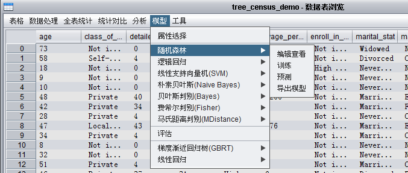- “编辑查看”， 如果当前表是随机森林模型，那以树的方式，打开模型。如果当前表示普通表，则以编辑模板的方式，打开当前表的一个空模型。
- “训练”，打开随机森林的训练界面
- “预测”，打开随机森林的预测界面
- “导出模型”，打开导出模型界面
训练¶
由菜单->随机森林>训练，进入训练界面如下：
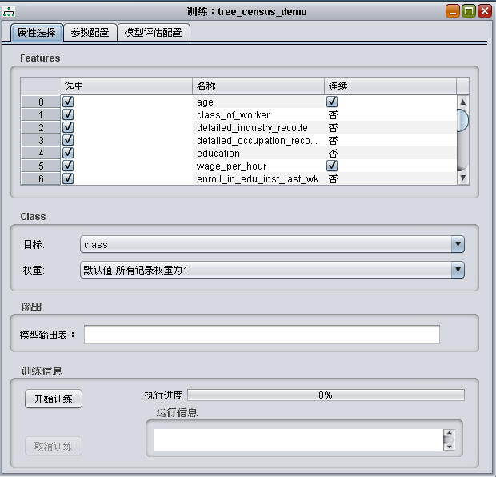训练界面一共有三个tab页，分别为：属性选择，参数配置，模型评估配置。
- 属性选择tab页如上图，一共分为四个部分，
- 第一部分为属性选择(默认为除去最后一列的所有其他列)，显示属性的表一共三类，第一列表示当前属性是否选择，第二列是属性名称，第三列表示属性是否连续的，默认double和long会当成连续的。
- 第二部分为目标列选择(默认为最后一列)以及权重设置。可以选择一个数值列做为权重列，权重列每个cell表示这一行记录的权重。
- 第三部分为模型输出表，用于存储模型数据，
- 第四部分为进度信息。
- 参数配置tab页如下图：
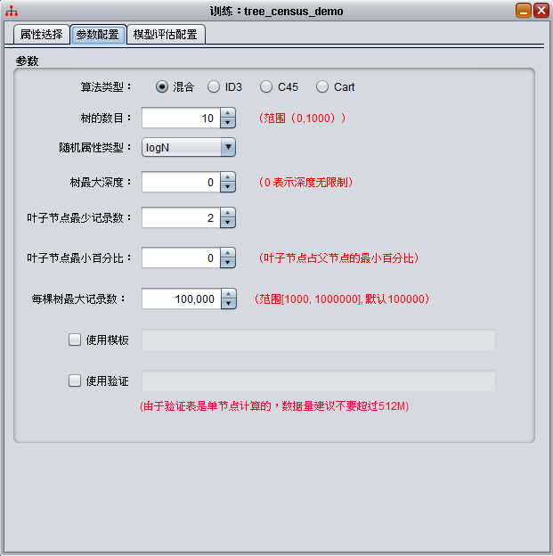
- 算法类型：四种，混合，ID3，C45，Cart
- 树的数目：训练树的数目
- 随机属性类型: 算法每步分裂的属性数目M， M<=N，N为属性总数目(不包含目标列)，这里提供选项分别N(全集)，log(N)，√N，N/3，1.
- 树最大深度：默认为0，深度无限制
- 叶子节点最少记录数：M，当节点记录少于M，停止分裂
- 叶子节点最小百分比：N，范围[0,1)，当节点记录数少于父节点*N，停止分裂
- 每棵树最大记录数：每棵树处理的最大记录数，范围[1000, 1000000]
- 使用模板：是否使用模板，输入为普通表，如何定义下面会具体介绍
- 使用验证：是否使用验证集，输入为普通表。可以提前使用数据拆分模块，拆分出训练集，验证集。(由于验证表是单节点计算的，数据量建议不要超过512M)
- 模型评估配置tab页如下：
模型评估配置分为四部分，第一部分评估输入表，第二部分预测，第三部分为计算混淆矩阵， 第四部分为计算画图数据。
- 评估输入表：两个选项，可以用训练表使用模型进行评估；或者准备验证表(tab页面，必须输入验证表)，验证表使用模型评估
- 参数配置：如果选中”评价模型”或”计算画图数据”，预测输出表不可为空
- 指标：如果选中”评价模型”，填写混淆矩阵输出表。
- ROC，lift and Recall-FP: 只有数据目标列是二分的，才可以画ROC，lift图， 如果选中二分类，需要指定目标列主分类的值，以及画图数据存储的输出表
参数配置完成以后，回到属性选择tab页，单击”开始训练”，界面如下：
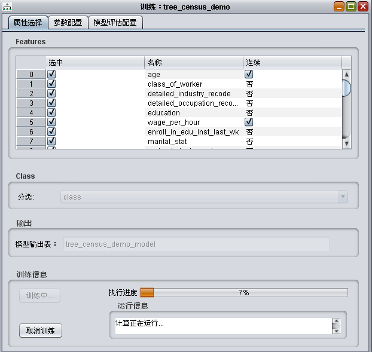训练结束后会自动显示训练的模型，后面会详细介绍模型：
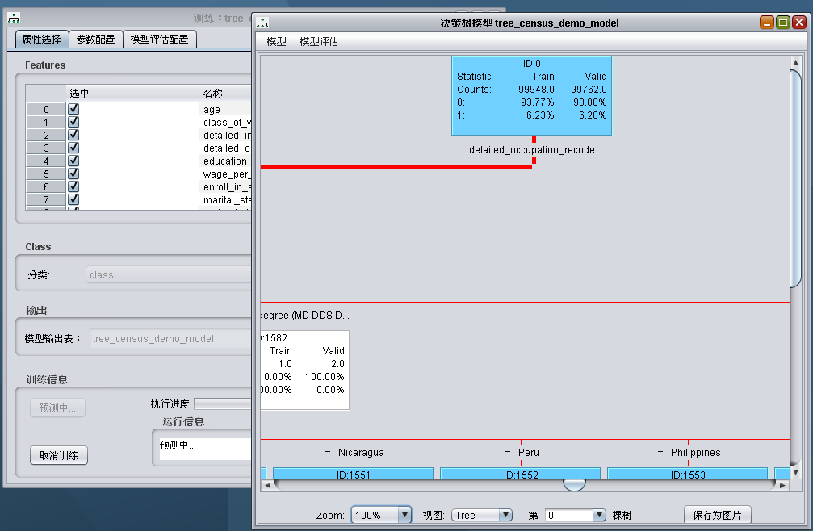如果选中了”指标评价”，训练结束会，先运行预测，界面如下：
然后运行计算混淆矩阵，提示信息如下：
计算完成后，通过 模型界面的菜单”模型评估”>”混淆矩阵”，查看混淆矩阵如下：
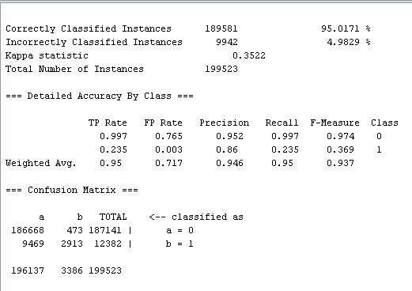如果选中了”画图”，训练结束，先运行预测，然后运行画图：

计算完成后，通过 模型界面的菜单”模型评估”>”ROC/Lift/Precious-Recall”，查看如下：
ROC图:
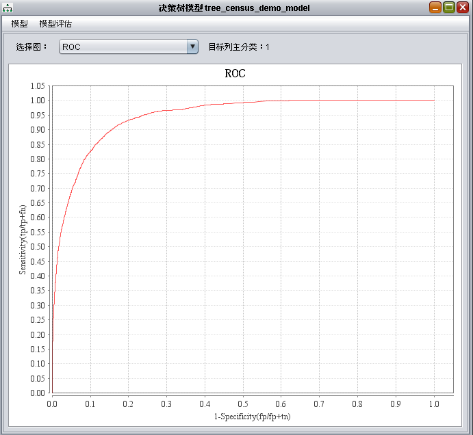Lift图：
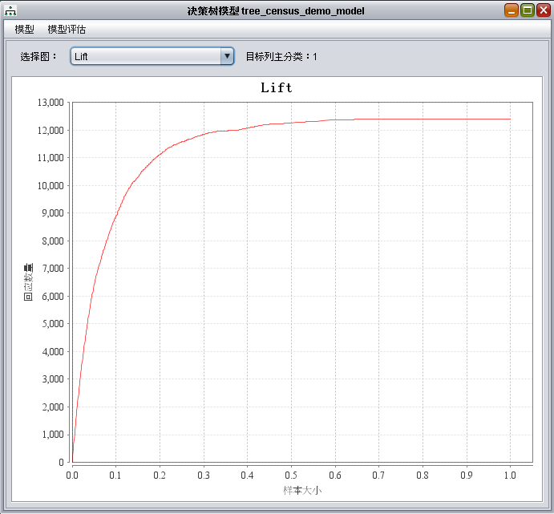Precious-Recall：
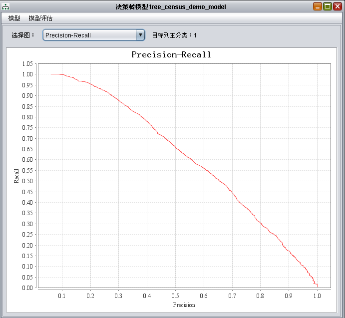预测¶
由菜单->随机森林>预测，进入预测界面如下：
其中：
- 预测输入表：要预测的表
- 结果附加列：可以选择预测输入表中需要输出到预测结果表的列，默认为无。
- 模型名：随机森林模型名
- 概率：如果目标列是二分的，且输入主分类，预测结果输出的是结论和输入分类的概率
- 输出表：预测输出表
单击”预测”，预测完成后，即可打开预测输出表查看预测结果：
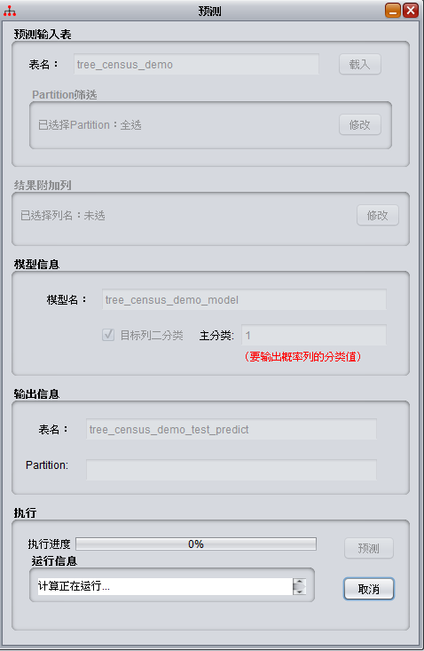预测成功，可以单击表tree_census_demo_test_predict查看预测结果：
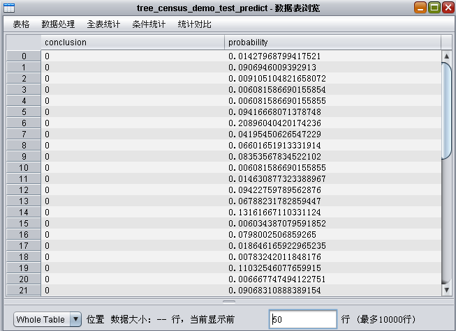其中concolusion为预测的结果，probability为分类1的概率。
模型显示¶
双击模型表，在菜单->随机森林>编辑查看，进入查看界面如下：
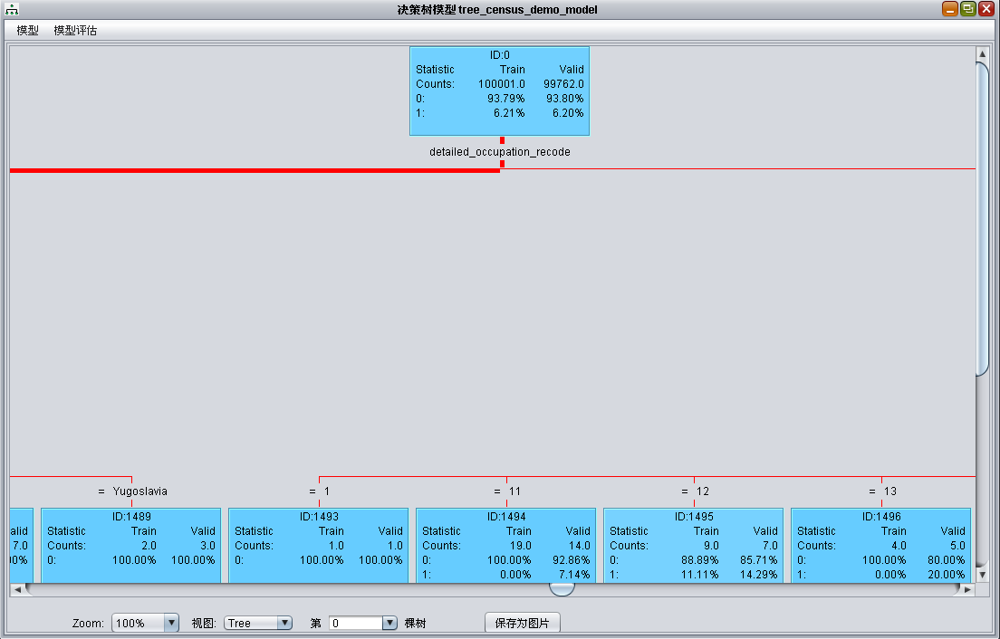模型界面页脚工具栏提供以下功能：
缩放：缩放50%如下：

选择查看第几棵树:
视图，分为三种：
第一种为tree view, 如图：
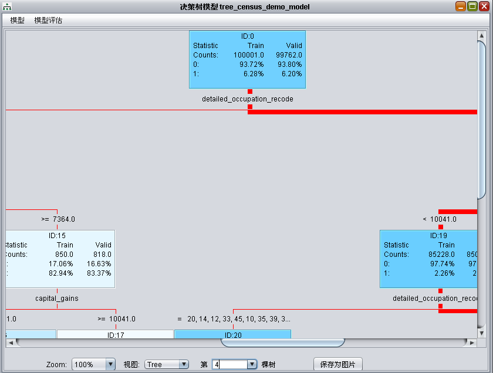对于tree view显示视图, 默认树节点显示当前节点目标列group分布，右击树节点，如下图：
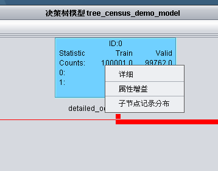树节点支持三种事件，查看详细信息，查看属性增益，查看子节点记录分布:
- 详细信息：显示节点训练数据目标列group分布， 验证数据集目标列group分布，训练数据目标列group错误率， 验证数据集目标列group错误率 如下：
- 属性增益：显示属性名称，以及增益值(如果是ID3算法，则为信息增益，如果为C45，则为信息增益率， 如果为Cart，则为gini增益):
- 子节点记录分布：显示节点ID，以及节点记录数比例:
第二种为print view，如图：
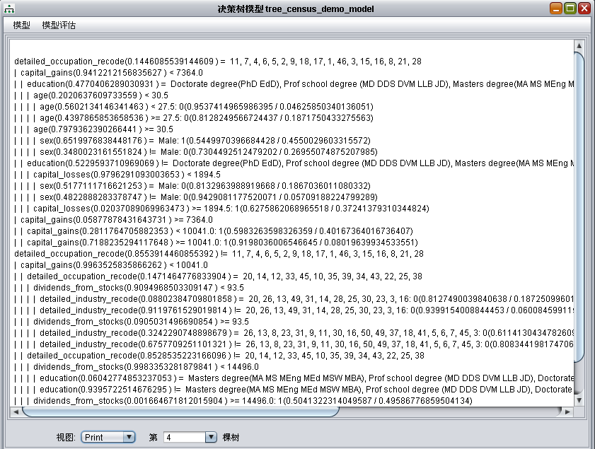第三种为：folder view，如图：
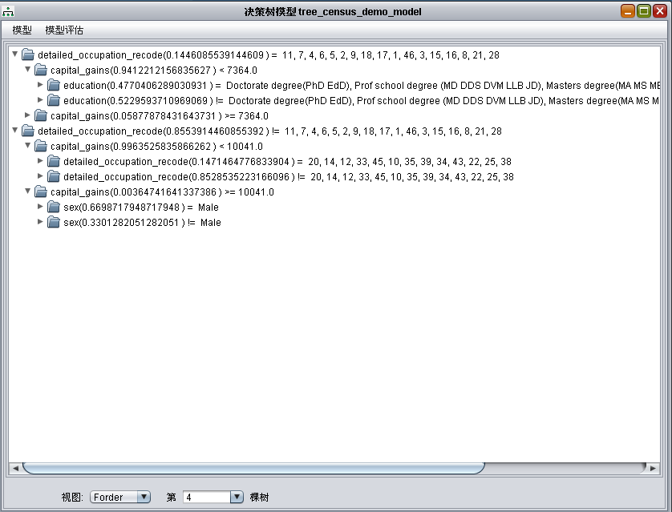导出模型¶
“导出模型”模块用于导出随机森林模型到特定格式的文本，模型需要满足一下几个条件：
模型是二分类；模型中单棵树的条数小于10000(由于ODPS 项目空间(Project) 的限制)；模型导出支持两种格式：分别为if..then.. prop 和 case..when(ODPS SQL)两种格式。
选择模型数据表，右击表名选择->随机森林->导出模型，如：
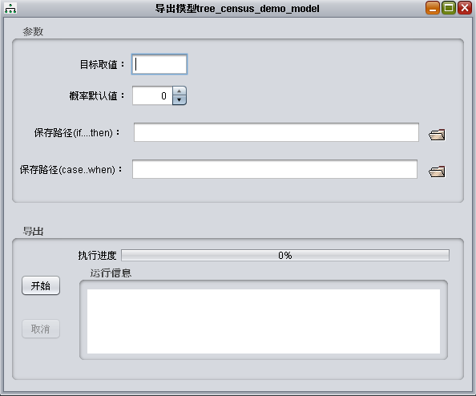- 目标取值：目标变量的取值，主要用户计算导出文本中的概率
- 概率默认值： 设置输出模型中概率的默认值
- 保存路径 (if..then): 保存的文本格式如 if a then prop=0.8, 单击文本框后面的文件夹可以选择文件的保存路径，如下
保存路径(caes..when):保存文本格式如 case when a then prop=0.8。
单击”开始”，则开始导出模型，并显示导出的进度，如：
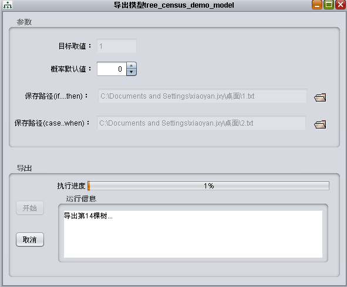逻辑回归¶
经典逻辑回归是一个二分类算法，Xlab中的逻辑回归可以支持多分类。XLab中的逻辑回归模型分为三种：二分类逻辑回归， 二分类逐步逻辑回归和 多分类逻辑回归。逻辑回归算法介绍：Logistic regression 。
- 二分类逻辑回归和多分类逻辑回归支持普通表和矩阵两种数据格式；而逐步逻辑回归只支持普通表。
- 对于普通表，要求特征列和label列(或者叫做目标列)都在同一张表里；而对于矩阵，要求整个矩阵都是特征，而label则在另外一张普通表中。
- 对于目标列，xlab支持富类型，包括boolean类型、bigint类型、string类型，double类型虽然也支持，但不鼓励使用。
- 逻辑回归使用数据表: adult进行使用说明。
函数¶
显示帮助信息
- 二分类逻辑回归的训练和预测，以及模型load：
help(Classification.LogistReg.train)
help(Classification.LogistReg.predict)
help(Classification.LogistReg.trainSparse)
help(Classification.LogistReg.predictSparse)
help(Classification.LogistReg.loadModel)
- 二分类逐步逻辑回归的训练和预测，以及模型load：
help(Classification.LogistRegStepWise.train)
help(Classification.LogistRegStepWise.predict)
help(Classification. LogistRegStepWise.loadModel)
- 多分类逻辑回归的训练和预测，以及模型load：
help(Classification.MultiLogistReg.train)
help(Classification.MultiLogistReg.predict)
help(Classification.MultiLogistReg.trainSparse)
help(Classification.MultiLogistReg.predictSparse)
help(Classification.MultiLogistReg.loadModel)
二分类训练¶
普通表的二分类逻辑回归训练
def train(inputTableName, featureColNames, labelColName, modelTableName,
inputPartitions = None, goodValue = None, maxIter = 100, epsilon = 1.0e-06,
regularizedType = 'l1', regularizedLevel = 1.0):
- 参数:
- inputTableName: 训练数据的表名
- featureColNames: 特征列的列名数组，列名必须是 inputTableName 里的列
- labelColName: label列(又叫目标列)的列名，列名必须是 inputTableName 里的列
- modelTableName: 输出的模型的表名
- inputPartitions: (可选)训练数据所在的partition列表，必须是 inputTableName 中的partition，默认是None，表示整表
- goodValue: (可选)指定训练系数针对的label值; 默认是随机选择一个, 模型里面会显示最终选择的是哪个
- maxIter: (可选)指定L-BFGS的最大迭代次数，默认是100
- epsilon: (可选)指定终止条件，就是两次迭代之间log-likelihood的差，默认为1.0e-06
- regularizedType: (可选)正则化类型，可以选择’l1’和’l2’，或者None，默认为’l1’
- regularizedLevel: (可选)正则项的系数; 当regularizedType为None时，该项也可以写None；注意需要写成1.0这种形式；默认为1.0
- 返回:
- 二分类逻辑回归模型
示例:
Classification.LogistReg.train('bank_full', ['f0','f1','f2','f3','f4','f5','f6','f7','f8','f9','f10','f11','f12','f13','f14','f15'], 'label', 'bank_full_model')
Classification.LogistReg.train('bank_full', ['f0','f1','f2','f3','f4','f5','f6','f7','f8','f9','f10','f11','f12','f13','f14','f15'], 'label', 'bank_full_model', goodValue='1', maxIter=150, epsilon=1.0e-05, regularizedType='l2', regularizedLevel=2.0)
矩阵的二分类逻辑回归训练
def trainSparse(featureMatrixName, labelTableName, labelColName, modelTableName,
labelPartitions = None, goodValue = None, maxIter = 100, epsilon = 1.0e-06,
regularizedType = 'l1', regularizedLevel = 1.0)
- 参数:
- featureMatrixName: 训练数据的特征所在矩阵的表名
- labelTableName: label(或者叫做目标)所在的表名
- labelColName: label列(又叫目标列)的列名，列名必须是 labelTableName 里的列
- modelTableName: 输出的模型的表名
- labelPartitions: label(或者叫做目标)所在的分区
- goodValue: (可选)指定训练系数针对的label值; 默认是随机选择一个, 模型里面会显示最终选择的是哪个
- maxIter: (可选)指定L-BFGS的最大迭代次数，默认是100
- epsilon: (可选)指定终止条件，就是两次迭代之间log-likelihood的差，默认为1.0e-06
- regularizedType: (可选)正则化类型，可以选择’l1’和’l2’，或者None，默认为’l1’
- regularizedLevel: (可选)正则项的系数; 当regularizedType为None时，该项也可以写None；注意需要写成1.0这种形式；默认为1.0
- 返回:
- 二分类逻辑回归模型
示例:
Classification.LogistReg.trainSparse('bank_full_sparse', 'bank_full', 'label', 'bank_full_model')
Classification.LogistReg.trainSparse('bank_full_sparse', 'bank_full', 'label', 'bank_full_model', goodValue='1', maxIter=150, epsilon=1.0e-05, regularizedType='l2', regularizedLevel=2.0)
二分类预测¶
普通表的二分类逻辑回归预测
def predict(inputTableName, model, outputTableName,
inputPartitions=None, outputPartition=None, labelValueToPredict=None, appendColNames=None)
- 参数：
- inputTableName: 预测数据的表名
- model: 预测所用的二分类逻辑回归模型
- outputTableName: 预测输出表的表名
- inputPartitions:(可选)预测输入数据的分区列表; None表示用全表
- outputPartition:(可选)预测输出数据的分区; None表示不输出到分区
- labelValueToPredict:(可选)预测所需要输出概率的label的值；None则不输出概率
- appendColNames:(可选)inputTableName中所需要附加到输出表的列名列表; None表示不附加任何列
示例：
bankFullModel = Classification.LogistReg.train('bank_full', ['f0','f1','f2','f3','f4','f5','f6','f7','f8','f9','f10','f11','f12','f13','f14','f15'], 'label', 'bank_full_model', goodValue='1', maxIter=150, epsilon=1.0e-05)
Classification.LogistReg.predict('bank_full', bankFullModel, 'predict_bank_full_result', labelValueToPredict='1', appendColNames=['label'])
矩阵的二分类逻辑回归预测
def predictSparse(featureMatrixName, model, outputTableName,
outputPartition=None, labelValueToPredict=None)
- 参数：
- featureMatrixName: 预测特征所在矩阵的表名
- model: 预测所用的二分类逻辑回归模型
- outputTableName: 预测输出表的表名
- outputPartition: (可选)预测输出数据的分区; None表示不输出到分区
- labelValueToPredict: (可选)预测所需要输出概率的label的值；None则不输出概率
示例：
bankFullModel = Classification.LogistReg.trainSparse('bank_full_sparse', 'bank_full', 'label', 'bank_full_model', goodValue='1', maxIter=150, epsilon=1.0e-05, regularizedType='l2', regularizedLevel=2.0)
Classification.LogistReg.predictSparse('bank_full_sparse', bankFullModel, 'predict_bank_full_result', labelValueToPredict='1')
二分类加载模型¶
从表加载一个二分类逻辑回归的模型
def loadModel(modelTableName)
- 参数：
- modelTableName: 二分类逻辑回归模型数据所在的表名
- 返回：
- 二分类逻辑回归模型
示例：
bankFullModel = Classification.LogistReg.loadModel('bank_full_model')
Classification.LogistReg.predictSparse('bank_full_sparse', bankFullModel, 'predict_bank_full_result', labelValueToPredict='1')
二分类逐步回归训练¶
普通表的二分类逐步逻辑回归
def train(inputTableName, featureColNames, labelColName, modelTableName, selectionInfoTableName,
selectionMethod = 'stepwise',
maxIter = 100, epsilon = 1.0e-06,
inputPartitions = None, goodValue = '',
slentry = 0.05, slstay = 0.05, include = 0)
- 参数：
- inputTableName: 训练数据的表名
- featureColNames: 特征列的列名数组，列名必须是 inputTableName 里的列
- labelColName: label列(又叫目标列)的列名，列名必须是 inputTableName 里的列
- modelTableName: 输出的模型的表名
- selectionInfoTableName: 存取选择过程信息的输出表名
- selectionMethod: (可选)可以是’stepwise’和’forward’；默认为’stepwise’;
- maxIter: (可选)指定Newton迭代的最大迭代次数，默认是100
- epsilon: (可选)指定终止条件，就是两次迭代之间log-likelihood的差，默认为1.0e-06
- inputPartitions: (可选)训练数据所在的partition列表，必须是 inputTableName 中的partition，默认是None，表示整表
- goodValue: (可选)指定训练系数针对的label值; 默认是随机选择一个, 模型里面会显示最终选择的是哪个
- slentry: (可选)控制特征进入模型的score test值的显著性水平；默认为0.05
- slstay: (可选)控制特征继续留在模型中的wald test值的显著性水平；默认为0.05
- include: (可选)强制featureColNames列表中的前多少个特征必须进入模型；默认为0
- 返回：
- 二分类逐步逻辑回归模型
示例：
bankFullModel = Classification.LogistRegStepWise.train('bank_full', ['f0','f1','f2','f3','f4','f5','f6','f7','f8','f9','f10','f11','f12','f13','f14','f15'], 'label', 'bank_full_model', 'bank_full_sel_info', goodValue='1', maxIter=150, epsilon=1.0e-05, slentry = 0.002, slstay=0.001, include=3)
二分类逐步回归预测¶
普通表的二分类逐步逻辑回归预测
def predict(inputTableName, model, outputTableName,
inputPartitions=None, outputPartition=None, labelValueToPredict=None, appendColNames=None)
- 参数：
- inputTableName: 预测数据的表名
- model: 预测所用的二分类逐步逻辑回归模型
- outputTableName: 预测输出表的表名
- inputPartitions: (可选)预测输入数据的分区列表; None表示用全表
- outputPartition: (可选)预测输出数据的分区; None表示不输出到分区
- labelValueToPredict: (可选)预测所需要输出概率的label的值；None则不输出概率
- appendColNames: (可选)inputTableName中所需要附加到输出表的列名列表; None表示不附加任何列
示例：
bankFullModel = Classification.LogistRegStepWise.train('bank_full', ['f0','f1','f2','f3','f4','f5','f6','f7','f8','f9','f10','f11','f12','f13','f14','f15'], 'label', 'bank_full_model', goodValue='1', maxIter=150, epsilon=1.0e-05, slentry = 0.002, slstay=0.001, include=3)
Classification.LogistRegStepWise.predict('bank_full', bankFullModel, 'predict_bank_full_result', labelValueToPredict='1', appendColNames=['label'])
二分类逐步回归加载模型¶
从表加载一个二分类逻辑回归的模型
def loadModel(modelTableName)
- 参数：
- modelTableName: 二分类逻辑回归模型数据所在的表名
- 返回：
- 二分类逻辑回归模型
示例：
bankFullModel = Classification.LogistRegStepWise.loadModel('bank_full_model')
Classification.LogistRegStepWise.predict('bank_full', bankFullModel, 'predict_bank_full_result', labelValueToPredict='1', appendColNames=['label'])
多分类训练¶
普通表的多分类逻辑回归，通过one vs else的方式实现
def train(inputTableName, featureColNames, labelColName, modelTableName,
inputPartitions = None, maxIter = 100, epsilon = 1.0e-06)
- 参数：
- inputTableName: 训练数据的表名
- featureColNames: 特征列的列名数组，列名必须是 inputTableName 里的列
- labelColName: label列(又叫目标列)的列名，列名必须是 inputTableName 里的列
- modelTableName: 输出的模型的表名
- inputPartitions: (可选)训练数据所在的partition列表，必须是 inputTableName 中的partition，默认是None，表示整表
- maxIter: (可选)指定L-BFGS的最大迭代次数，默认是100
- epsilon: (可选)指定终止条件，就是两次迭代之间log-likelihood的差，默认为1.0e-06
- 返回：
- 多分类逻辑回归模型
示例：
bankFullModel = Classification.MultiLogistReg.train('bank_full', ['f0','f1','f2','f3','f4','f5','f6','f7','f8','f9','f10','f11','f12','f13','f14','f15'], 'label', 'bank_full_model', maxIter=150, epsilon=1.0e-05)
矩阵的多分类逻辑回归，通过one vs else的方式实现
def trainSparse(featureMatrixName, labelTableName, labelColName, modelTableName,
labelPartitions = None, maxIter = 100, epsilon = 1.0e-06)
- 参数：
- featureMatrixName: 训练数据的特征所在矩阵的表名
- labelTableName: label(或者叫做目标)所在的表名
- labelColName: label列(又叫目标列)的列名，列名必须是 labelTableName 里的列
- modelTableName: 输出的模型的表名
- labelPartitions: (可选)label(或者叫做目标)所在的分区
- maxIter: (可选)指定L-BFGS的最大迭代次数，默认是100
- epsilon: (可选)指定终止条件，就是两次迭代之间log-likelihood的差，默认为1.0e-06
- 返回：
- 多分类逻辑回归模型
示例：
bankFullModel = Classification.MultiLogistReg.trainSparse('bank_full_sparse', 'bank_full', 'label', 'bank_full_model', maxIter=150, epsilon=1.0e-05)
多分类预测¶
普通表的多分类逻辑回归预测
def predict(inputTableName, model, outputTableName,
inputPartitions=None, outputPartition=None, outputProbability=False, appendColNames=None)
- 参数：
- inputTableName: 预测数据的表名
- model: 预测所用的二分类逻辑回归模型
- outputTableName: 预测输出表的表名
- inputPartitions: (可选)预测输入数据的分区列表; None表示用全表
- outputPartition: (可选)预测输出数据的分区; None表示不输出到分区
- outputProbability: (可选)是否输出各label值的预测概率；默认为False，不输出
- appendColNames: (可选)inputTableName中所需要附加到输出表的列名列表; None表示不附加任何列
示例：
bankFullModel = Classification.MultiLogistReg.train('bank_full', ['f0','f1','f2','f3','f4','f5','f6','f7','f8','f9','f10','f11','f12','f13','f14','f15'], 'label', 'bank_full_model', maxIter=150, epsilon=1.0e-05)
Classification.MultiLogistReg.predict('bank_full', bankFullModel, 'predict_bank_full_result', outputProbability=True, appendColNames=['label'])
矩阵的多分类逻辑回归预测
def predictSparse(featureMatrixName, model, outputTableName,
outputPartition=None, outputProbability = False)
- 参数：
- featureMatrixName: 预测特征所在矩阵的表名
- model: 预测所用的多分类逻辑回归模型
- outputTableName: 预测输出表的表名
- outputPartition: (可选)预测输出数据的分区; None表示不输出到分区
- outputProbability: (可选)是否输出各label值的预测概率的开关；默认是False，表示不输出
示例：
bankFullModel=Classification.MultiLogistReg.trainSparse('bank_full_sparse', 'bank_full', 'label', 'bank_full_model', maxIter=150, epsilon=1.0e-05)
Classification.MultiLogistReg.predictSparse('bank_full_sparse', bankFullModel, 'predict_bank_full_result', outputProbability=True)
多分类加载模型¶
从表名生成一个多分类逻辑回归的模型
def loadModel(modelTableName)
- 参数：
- modelTableName: 多分类逻辑回归模型数据所在的表名
示例：
bankFullModel = Classification.MultiLogistReg.loadModel('bank_full_model')
Classification.MultiLogistReg.predict('bank_full', bankFullModel, 'predict_bank_full_result', outputProbability=True, appendColNames=['label'])
正则项
通过调整正则项的参数regularizeType和regularizeLevel，可以将拟合的模型泛化，使得比较多的不太突出的特征，拟合系数为0；
通过正则项参数regularizedType 和 regularizeLevel 可以指定 正则项 的系数(以下公式中的 C)。
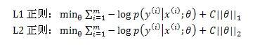界面¶
训练¶
选择数据表,点击数据分析→逻辑回归→训练

其中：
- Partition筛选：选择参与逻辑回归模型训练的partition。
- 目标变量：数据表中目标分类列，支持Long，Integer，String，Boolean类型。
- 二分类：标记目标变量是否为二分类，当二分类选项被勾选时，逐步回归会被激活，需填写GoodValue。
- GoodValue：当目标变量为二分类时，需要指定GoodValue的值，即逻辑回归运算中映射为1的值。
- 输入表选中列：参与逻辑回归计算的列，只支持数值型。
- 最大迭代次数：使用优化方法求最优解时的最大迭代次数，当迭代次数等于此值时，不论是否收敛，都将停止运算。
- 收敛误差：当两次迭代的结果小于此值时，认为算法已经收敛，停止运算。
- 模型输出表：存储逻辑回归模型的数据表。
- 逐步回归：逻辑回归算法可选择逐步回归以筛选变量，支持stepwise和forward两种模式，当逐步回归被勾选时，算法会进行多次逻辑回归运算：保留那些对目标变量影响较大的变量，剔除那些对目标变量影响较小的变量。
- 逐步回归信息输出表：逐步回归的过程信息会输出至此表，可从此表中获得每一步添加或删除一个变量的信息。
- 逐步回归方式：forward模式会逐步增加变量至模型中，stepwise模式会在每次增加变量后再尝试剔除变量。
- 引入变量阈值：进行逐步回归欲引入变量score值的检验值,只有当变量score值大于此值时才会把此变量引入。
- 剔除变量阈值：进行逐步回归欲剔除变量wald值的检验值,只有当变量wald值小于此值时才会把此变量剔除。
- 必选变量数：进行逐步回归时模型中至少保留的变量数。
训练结果
会将所得模型表展示出来，如下图所示：
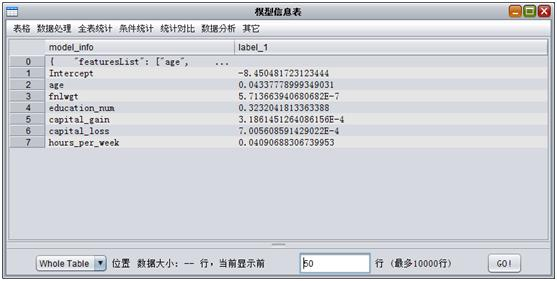预测¶
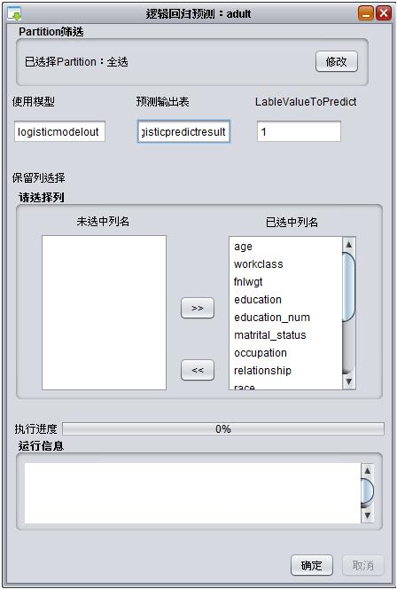其中：
- Partition筛选：选择参与逻辑回归预测的partition。
- 使用模型：选择进行逻辑回归预测的模型。
- 预测输出表：选择预测结果的输出表。
- 保留列选择：选择会保留出现在预测结果表中的列。
预测结果
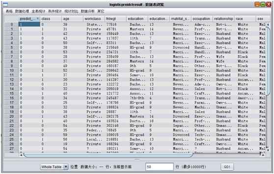线性支持向量机(Linear SVM)¶
支持向量机(SVM)是建立在VC维理论和结构风险最小原理基础上的一种模式识别方法。目前的版本仅支持线性二分类问题，更多功能将在后续版本中逐步推出。SVM算法介绍：Support vector machine 。
下文使用数据表: adult，进行介绍函数和界面的操作方法。
函数¶
线性SVM包括以下几个函数：train , trainSparse, predict, predictSparse和loadModel。
这几个函数具体使用方法，可用help命令查看，示例：
help(Classification.LinearSVM.train)
help(Classification.LinearSVM.trainSparse)
help(Classification.LinearSVM.predict)
help(Classification.LinearSVM.predictSparse)
help(Classification.LinearSVM.loadModel)
训练¶
def train(inputTableName, featureColNames, labelColName, modelTableName, inputPartitions = None,cost = 1,epsilon = 0.001):
- 参数:
- inputTableName：输入表名，普通表
- featureColNames：特征列名，字符数组
- labelColName：label列名
- modelTableName：模型表名，普通表
- inputPartitions：(可选)输入表分区
- cost：(可选)惩罚因子,默认值为1
- epsilon：(可选)收敛系数，默认值为0.001
- 返回:
- LinearSVMModel 线性svm模型
示例：
Classification.LinearSVM.train("train_input", ["height","weight","footsize"], "sex", "svm_model", inputPartitions = None,cost = 1,epsilon = 0.001)
def trainSparse(featureMatrixName, labelTableName, labelColName, modelTableName, labelPartitions = None,cost = 1,epsilon = 0.001):
- 参数:
- featureMatrixName：输入 Xlib稀疏矩阵表 名
- labelTableName：label列所在表名
- labelColName：label列名
- modelTableName：模型表名，普通表
- labelPartitions：(可选)label列所在表分区
- cost：(可选)惩罚因子,默认值为1
- epsilon：(可选)收敛系数，默认值为0.001
- 返回:
- LinearSVMModel 线性svm模型
示例：
Classification.LinearSVM.trainSparse("train_input_sparse", "train_input", "sex", "svm_model_sparse", labelPartitions = None,cost = 1,epsilon = 0.001)
预测¶
def predict(inputTableName, model, outputTableName, inputPartitions = None, appendColNames = None, outputPartition = None):
- 参数:
- inputTableName：输入表名，普通表
- model：模型，类型为LinearSVMModel
- outputTableName: 输出表名，普通表
- inputPartitions: (可选)输入表分区
- appendColNames：(可选)输入表中插入到输出表中的列名
- outputPartition: (可选)输出表分区
- 返回:
- void 无
示例：
svmmodel=Classification.LinearSVM.train("train_input", ["height", "weight","footsize"], "sex", "svm_model", inputPartitions = None,cost = 1,epsilon = 0.0001)
Classification.LinearSVM.predict("predict_input", svmmodel, "svm_model_predict_table_out",inputPartitions = None, appendColNames = None, outputPartition = None)
def predictSparse(inputTableName, model, outputTableName, outputPartition = None):
- 参数:
- inputTableName：输入表名， Xlib稀疏矩阵表
- model：模型，类型为LinearSVMModel
- outputTableName: 输出表名，普通表
- outputPartition: (可选)输出表分区
- 返回:
- void 无
示例：
svmmodel=Classification.LinearSVM.trainSparse("train_input_sparse", "train_input", "sex",
"svm_model_sparse", labelPartitions = None,cost = 1,epsilon = 0.001)
Classification.LinearSVM.predictSparse("predict_sparse_input", svmmodel, "svm_model_predict_sparse_out",
outputPartition = None)
加载模型¶
def loadModel(modelTableName):
- 参数:
- modelTableName：模型表表名，普通表
- 返回:
- LinearSVMModel 线性svm模型
示例：
Classification.LinearSVM.loadModel("svm_model")
界面¶
界面包括：训练和预测。
训练¶
通过UI界面(只支持输入训练集格式为普通表)选择数据表，点击模型→线性支持向量机→训练
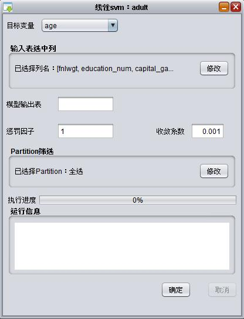其中：
- Partition筛选：选择参与线性支持向量机模型训练的partition。
- 目标变量：数据表中目标分类列，支持Long，Integer，String，Boolean类型，目前只支持两类。
- 输入表选中列：参与线性支持向量机计算的列，只支持数值型。
- 模型输出表：线性支持向量机模型输出表。
- 惩罚因子：C，软间隔SVM中的用来衡量对噪声点的重视程度。
- 收敛系数：目标函数梯度的相对变化低于该值，认为算法收敛。
选择完毕单击”确定”开始训练。训练结果：模型表，其中最后一行表示截距，如下图：
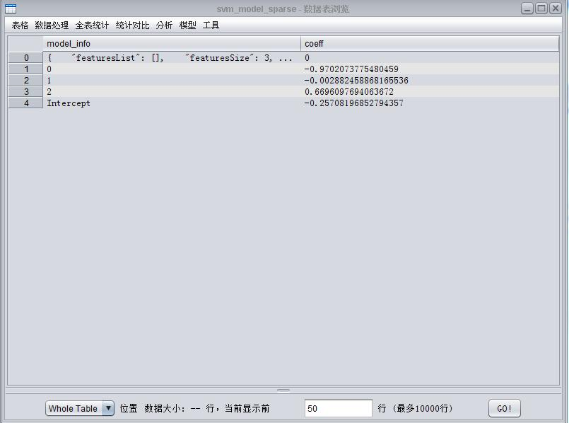
{kind=link}
{kind=link}
{kind=link}
{kind=link}
{kind=link}
{kind=link}
{kind=link}
{kind=link}
{kind=link}
{kind=link}
{kind=link}
{kind=link}
{kind=link}
{kind=link}
{kind=link}
{kind=link}
{kind=link}
{kind=link}
{kind=link}
{kind=link}
{kind=link}
{kind=link}
{kind=link}
{kind=link}
{kind=link}
{kind=link}
{kind=link}
{kind=link}
{kind=link}
{kind=link}
{kind=link}
{kind=link}
{kind=link}
{kind=link}
{kind=link}
朴素贝叶斯(Naive Bayes)¶
朴素贝叶斯分类是一种应用基于独立假设的贝叶斯定理的简单概率分类算法.更精确的描述这种潜在的概率模型为独立特征模型。 算法详见： Naive Bayes classifier
为便于说明，先约定如下：
- 训练输入表：train_input
- 模型表：naive_bayes_model
- 预测输入表：predict_input
- 预测输出表：naive_bayes_predict_output
- 特征列名：[“height”, “weight”,”footsize”]
- Label列名：”sex”
朴素贝叶斯模型的执行途径有两种：函数和界面。其主要涉及两个过程：训练和预测，详见下文。
函数¶
朴素贝叶斯包括以下几个函数：train , predict和loadModel。三个函数具体使用方法，可用help命令查看，示例：
help(Classification.NaiveBayes.train)
help(Classification.NaiveBayes.predict)
help(Classification.NaiveBayes.loadModel)
训练¶
def train(inputTableName, featureColNames, labelColName, modelTableName, inputPartitions=None):
- 参数:
- inputTableName：输入表名，普通表
- featureColNames：特征列名，字符数组
- labelColName：label列名
- modelTableName：模型表名，普通表
- inputPartitions：(可选)输入表分区
- 返回:
- NaiveBayesModel 朴素贝叶斯模型
示例：
Classification.NaiveBayes.train("train_input", ["height", "weight","footsize"], "sex",
"naive_bayes_model",inputPartitions = None)
预测¶
def predict(inputTableName, model, outputTableName, inputPartitions=None, appendColNames=None,
outputPartition=None):
- 参数:
- inputTableName：输入表名，普通表
- model：模型，类型为朴素贝叶斯NaiveBayesModel
- outputTableName：输出表名，普通表
- inputPartitions：(可选)输入表分区
- appendColNames：(可选)输入表中插入到输出表中的列名
- outputPartition：(可选)输出表分区
- 返回:
- void 无
示例：
nvmodel=Classification.NaiveBayes.train("train_input", ["height", "weight","footsize"], "sex", "naive_bayes_model")
Classification.NaiveBayes.predict("predict_input", nvmodel, "naive_bayes_model_predict_out")
加载模型¶
def loadModel(modelTableName):
- 参数:
- modelTableName：模型表表名，普通表
- 返回:
- NaiveBayesModel 朴素贝叶斯模型
示例：
Classification.NaiveBayes.loadModel("naive_bayes_model")
- 注意事项:
- 该分类算法，对于训练和预测的输入输出，仅支持普通表(table)；
- 特征值(feature)仅支持数值类型：Double,Bigint，label值支持Double, Bigint, Boolean, String；
- 对于预测输出结果，可以选择将预测输入的若干列附加到预测输出表中。
界面¶
界面包括：训练和预测。
训练¶
- 输入：普通表，包含label列和数值类型feature列的表，如train_input 。
- 输出：模型表，包括预测用到的一些参数，共五列，如naive_bayes_model 。
训练步骤如下：
首先，打开训练输入表train_input，然后点击”模型”—”朴素贝叶斯(Naïve Bayes)”-“训练”，如下图：
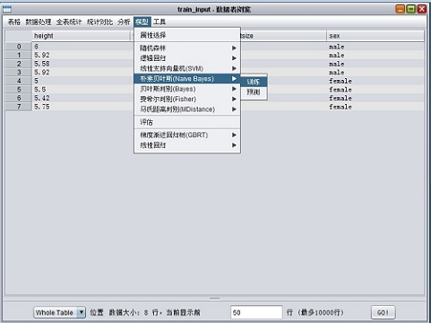{kind=link}
然后，在训练窗口，在对应提示区域填写相应参数，”Partition筛选”，”选择feature列”，”Label列”，”输出表表名”； 点击界面右下角按钮”训练”开始训练，如下图：
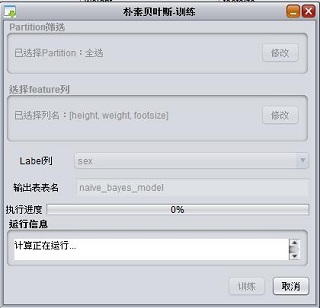{kind=link}
- 对于”Partition筛选”，默认为全选，如果需要对某个分区操作，可以选择”Partition筛选”对应的修改按钮，没有分区则不用修改。
- 对于”选择feature列”，点击”修改”后，候选列表均为数值类型，用户可根据需要选择feature，如：train_input的特征列为[“height”, “weight”,”footsize”]。
- 对于”Label列”选择，不能跟feature列有交集，如：train_input的目标列(即label列)为sex。
- 对于”输出表表名”，如：naive_bayes_model。
最后，模型训练成功，自动打开model表naive_bayes_model，如下图：
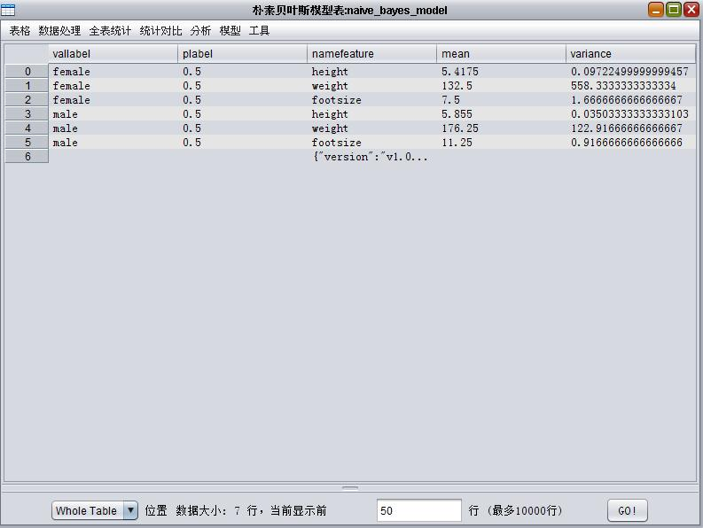{kind=link}
朴素贝叶斯模型表包括两种信息：conf和data信息
- conf信息包括：version，featureSize和 featureList
- data信息包括以下数据：
- valLabel：lable的值
- pLabel：label的概率
- nameFeature：特征名
- mean：feature相对于label的均值
- variance：feature相对于label的方差
预测¶
- 输入：包括输入表和模型表，输入表，如predict_input，模型表，如naive_bayes_model。
- 输出：预测结果输出表，如naive_bayes_predict_output。输出表一般只有一列conclusion，也可以append输入表中的若干列列在输出表中。
预测步骤如下：
首先，可打开”输入表”或者”模型表”
- 如果打开的是”输入表”predict_input，点击”模型”—”朴素贝叶斯(Naïve Bayes)”—”预测”，预测表表名会被自动加载，用户可在”Parition筛选”区域选择修改Partition，在”Model表名”处填写模型表名，如下图：
{kind=link}
- 如果打开的是”模型表”naive_bayes_model，点击”模型”—”朴素贝叶斯(Naïve Bayes)”—”预测”，Model表名会被自动加载，用户需在”预测表”区域，填写表名，点击”加载Partition”后，可进行”Partition筛选”如下图：
{kind=link}
- 对于”Partition筛选”，默认为全选，如果需要对某个分区操作，可以选择”Partition筛选”对应的修改按钮，没有分区则不用修改。
然后，在”输出表名”处，填写预测输出表如naive_bayes_predict_output，点击”训练”按钮开始训练，如下图：
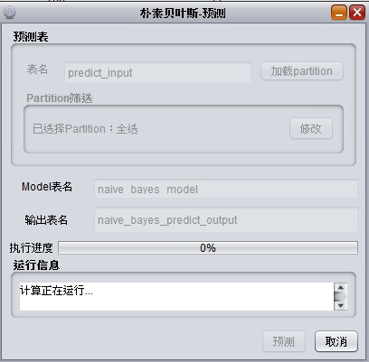{kind=link}
最后，预测成功，会自动打开输出表，如下图：

贝叶斯判别(Bayes)¶
Bayes的统计思想总是假定对所研究的对象已有一定的认识,常用先验概率分布来描述这种认识。然后我们抽取一个样本，用样本来修正已有的认识(先验概率分布)，得到后验概率分布。各种统计推断都通过后验概率分布来进行，将贝叶斯思想用于判别分析就得到贝叶斯判别法。
在正态总体的假设下，按Bayes判别的思想，在错判造成的损失认为相等情况下得到的判别函数其实就是马氏距离判别在考虑先验概率及协差阵不等情况下的推广。
所谓判别方法,就是给出空间Rm的一种划分:D={D1,D2,…,Dk}。一种划分对应一种判别方法,不同的划分就是不同的判别方法。Bayes判别法也是给出空间Rm的一种划分。
为便于说明，先约定如下： * 训练输入表： train_input * 模型表： bayes_model * 预测输入表： predict_input * 预测输出表： bayes_predict_output * 特征列名： [“height”, “weight”,”footsize”] * Label列名： “sex”
贝叶斯模型的执行途径有两种：函数和界面。其主要涉及两个过程：训练和预测，详见下文。
函数¶
贝叶斯判别包括以下几个函数：train , predict和loadModel。
三个函数具体使用方法，可用help命令查看，示例：
help(Classification.BayesDiscriminant.train)
help(Classification.BayesDiscriminant.predict)
help(Classification.BayesDiscriminant.loadModel)
训练¶
def train(inputTableName, featureColNames, labelColName, modelTableName, inputPartitions=None):
- 参数:
- inputTableName：输入表名，普通表
- featureColNames：特征列名，字符数组
- labelColName：label列名
- modelTableName：模型表名，普通表
- inputPartitions：(可选)输入表分区
- 返回:
- BayesModel 贝叶斯模型
示例：
Classification.BayesDiscriminant.train("train_input", ["height", "weight","footsize"], "sex", "bayes_model")
预测¶
def predict(inputTableName, model, outputTableName, inputPartitions=None, appendColNames=None, outputPartition=None):
- 参数:
- inputTableName：输入表名，普通表
- model：模型，类型为贝叶斯BayesModel
- outputTableName：输出表名，普通表
- inputPartitions：(可选)输入表分区
- appendColNames：(可选)输入表中插入到输出表中的列名
- outputPartition：(可选)输出表分区
- 返回:
- void 无
示例：
bayesmodel=Classification.BayesDiscriminant.train("train_input", ["height", "weight","footsize"], "sex", "bayes_model")
Classification.BayesDiscriminant.predict("predict_input", bayesmodel, "bayes_model_predict_out")
加载模型¶
def loadModel(modelTableName):
- 参数:
- modelTableName：模型表表名，普通表
- 返回:
- BayesModel 贝叶斯模型
示例：
Classification.BayesDiscriminant.loadModel("bayes_model")
- 注意事项:
- 该分类算法，对于训练和预测的输入输出，仅支持普通表(table)；
- 特征值(feature)仅支持数值类型：Double,Bigint，label值支持Double, Bigint, Boolean, String；
- 对于预测输出结果，可以选择将预测输入的若干列附加到预测输出表中。
界面¶
界面包括：训练和预测。
训练¶
- 输入：普通表，包含label列和数值类型feature列的表，如train_input 。
- 输出：模型表，包括预测用到的一些参数，如bayes_model 。
训练步骤如下：
首先，打开训练输入表train_input，然后点击”模型”—”贝叶斯(Bayes)”-“训练”，如下图：
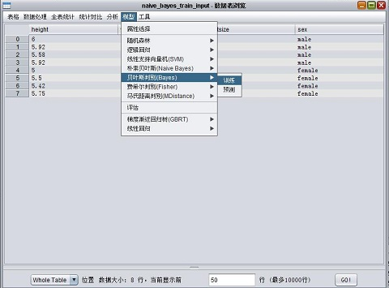{kind=link}
然后，在训练窗口，在对应提示区域填写相应参数，”Partition筛选”，”选择feature列”，”Label列”，”输出表表名”，点击界面右下角按钮”训练”开始训练，如下图：
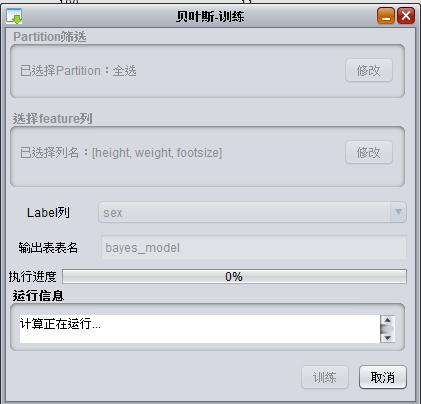{kind=link}
其中：
- 对于”Partition筛选”，默认为全选，如果需要对某个分区操作，可以选择”Partition筛选”对应的”修改”按钮，没有分区则不用修改。
- 对于”选择feature列”，点击”修改”后，候选列表均为数值类型，用户可根据需要选择feature，如：train_input的特征列为[“height”, “weight”,”footsize”]。
- 对于”Label列”选择，不能跟feature列有交集，如：train_input的目标列(即label列)为sex。
- 对于”输出表表名”，如：bayes_model。
最后，模型训练成功，自动打开model表bayes_model，如下图：
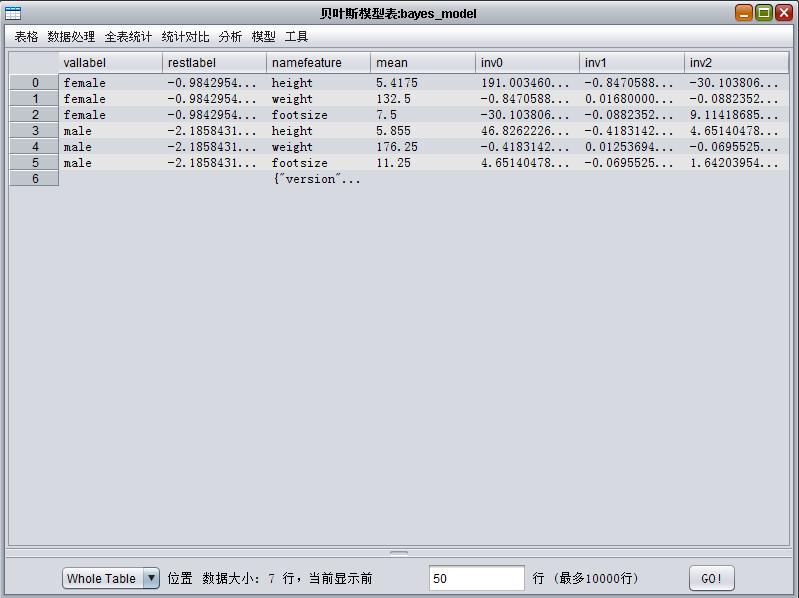{kind=link}
贝叶斯模型表包括两种信息：conf和data信息
- conf信息包括：version，featureSize和 featureList
- data信息包括以下数据：
- valLabel： lable的值
- restLabel： label的差值：2 * Math.log(p) - Math.log(det(COV))
- nameFeature： 特征名
- mean： feature相对于label的均值
- inv： feature的协方差的逆
预测¶
- 输入：包括输入表和模型表，输入表，如predict_input，模型表，如bayes_model。
- 输出：预测结果输出表，如bayes_predict_output。输出表一般只有一列conclusion，也可以append输入表中的若干列列在输出表中
预测步骤如下：
首先，可打开”输入表”或者”模型表”
- 如果打开的是”输入表”predict_input，点击”模型”—”贝叶斯(Bayes)”—”预测”，预测表表名会被自动加载，用户可在”Parition筛选”区域选择修改Partition，在”Model表名”处填写模型表名，如下图：
{kind=link}
- 如果打开的是”模型表”bayes_model，点击”模型”—”贝叶斯(Bayes)”—”预测”，Model表名会被自动加载，用户需在”预测表”区域，填写表名，点击”加载Partition”后，可进行”Partition筛选”如下图：
{kind=link}
- 对于”Partition筛选”，默认为全选，如果需要对某个分区操作，可以选择”Partition筛选”对应的修改按钮，没有分区则不用修改。
然后，在”输出表名”处，填写预测输出表如bayes_predict_output，点击”训练”按钮开始训练，如下图：
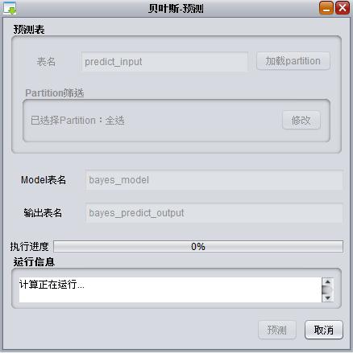{kind=link}
最后，预测成功，会自动打开输出表，如下图：
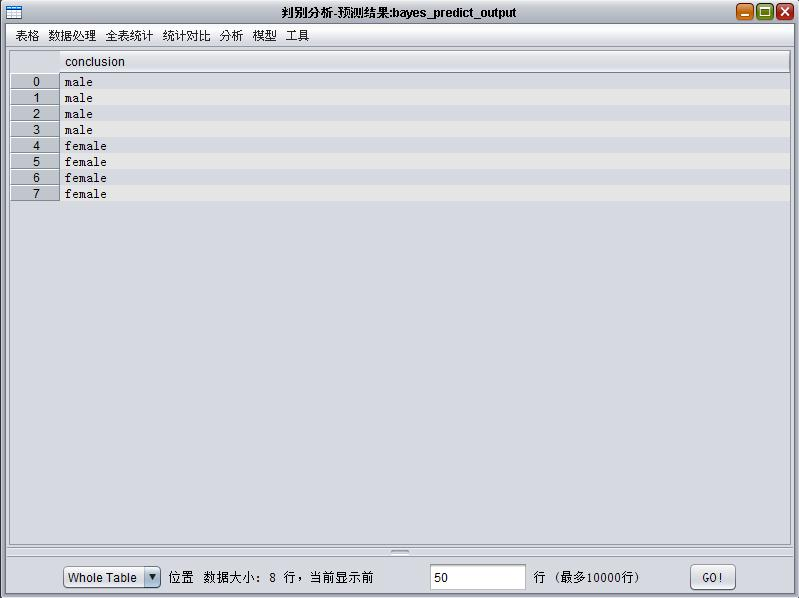{kind=link}
费希尔判别(Fisher)¶
费希尔判别的基本思想是投影(或降维)。
Fisher方法是要找到一个(或一组)投影轴w使得样本投影到该空间后能在保证方差最小的情况下，将不同类的样本很好的分开。并将度量类别均值之间差别的量称为类间方差(或类间散布矩阵);而度量这些均值周围方差的量称为类内方差(或类内散布矩阵)。
Fisher判决的目标就是:寻找一个或一组投影轴，能够在最小化类内散布的同时最大化类间布。
为便于说明，先约定如下：
- 训练输入表： train_input
- 模型表： fisher_model
- 预测输入表： predict_input
- 预测输出表： fisher_predict_output
- 特征列名： [“height”, “weight”,”footsize”]
- Label列名： “sex”
费希尔判别模型的执行途径有两种：函数和界面。其主要涉及两个过程：训练和预测，详见下文。
函数¶
费希尔判别包括以下几个函数：train , predict和loadModel。
三个函数具体使用方法，可用help命令查看，示例：
help(Classification.FisherDiscriminant.train)
help(Classification.FisherDiscriminant.predict)
help(Classification.FisherDiscriminant.loadModel)
训练¶
def train(inputTableName, featureColNames, labelColName, modelTableName, inputPartitions=None):
- 参数:
- inputTableName：输入表名，普通表
- featureColNames：特征列名，字符数组
- labelColName：label列名
- modelTableName：模型表名，普通表
- inputPartitions：(可选)输入表分区
- 返回:
- FisherDiscriminantModel 费希尔判别模型
示例：
Classification.FisherDiscriminant.train("train_input", ["height", "weight","footsize"], "sex", "fisher_model")
预测¶
def predict(inputTableName, model, outputTableName, inputPartitions=None, appendColNames=None,
outputPartition=None):
- 参数:
- inputTableName：输入表名，普通表
- model：模型，类型为费希尔判别模型FisherDiscriminantModel
- outputTableName：输出表名，普通表
- inputPartitions：(可选)输入表分区
- appendColNames：(可选)输入表中插入到输出表中的列名
- outputPartition：(可选)输出表分区
- 返回:
- void 无
示例：
fishermodel=Classification.FisherDiscriminant.train("train_input", ["height", "weight","footsize"],
"sex", "fisher_model")
Classification.FisherDiscriminant.predict("predict_input", fishermodel, "fisher_model_predict_out")
加载模型¶
def loadModel(modelTableName):
- 参数:
- modelTableName：模型表表名，普通表
- 返回:
- FisherDiscriminantModel 费希尔判别模型
示例：
Classification.FisherDiscriminant.loadModel("fisher_model")
- 注意事项:
- 该分类算法，对于训练和预测的输入输出，仅支持普通表(table)；
- 特征值(feature)仅支持数值类型：Double,Bigint，label值支持Double, Bigint, Boolean, String；
- 对于预测输出结果，可以选择将预测输入的若干列附加到预测输出表中。
界面¶
界面包括：训练和预测。
训练¶
- 输入：普通表，包含label列和数值类型feature列的表，如train_input 。
- 输出：模型表，包括预测用到的一些参数，如fisher_model 。
训练步骤如下： 首先，打开训练输入表train_input，然后点击”模型”—”费希尔判别(Fisher)”-“训练”，如下图：
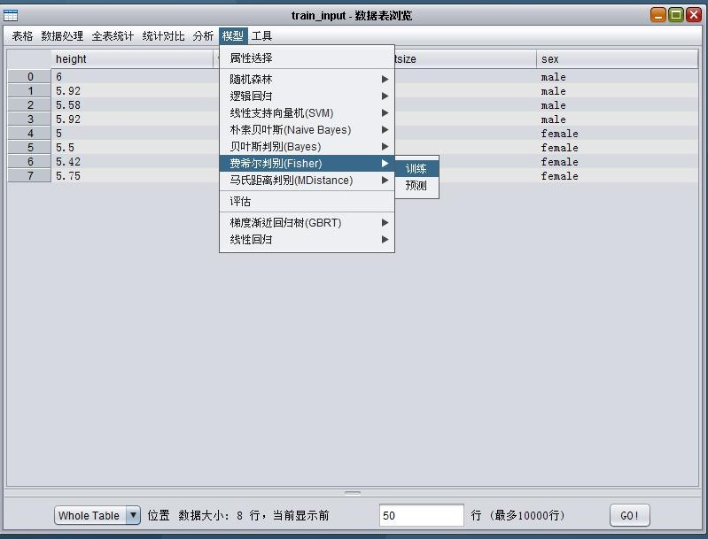{kind=link}
然后，在训练窗口，在对应提示区域填写相应参数，”Partition筛选”，”选择feature列”，”Label列”，”输出表表名”，最后点击界面右下角按钮”训练”开始训练，如下图：
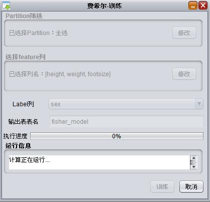{kind=link}
其中：
- 对于”Partition筛选”，默认为全选，如果需要对某个分区操作，可以选择”Partition筛选”对应的修改按钮，没有分区则不用修改。
- 对于”选择feature列”，点击”修改”后，候选列表均为数值类型，用户可根据需要选择feature，如：train_input的特征列为[“height”, “weight”,”footsize”]。
- 对于”Label列”选择，不能跟feature列有交集，如：train_input的目标列(即label列)为sex。
- 对于”输出表表名”，如：fisher_model。
最后，模型训练成功，自动打开model表fisher_model，如下图：
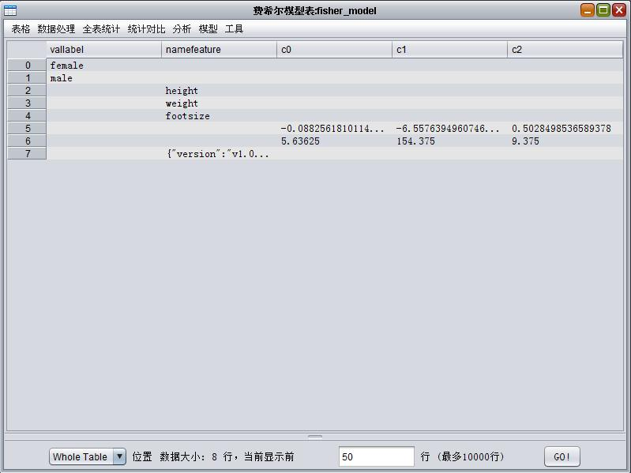{kind=link}
费希尔判别模型表包括两种信息，conf和data信息：
- conf信息包括：version，featureSize和 featureList
- data信息包括以下数据：
- valLabel： lable的值
- nameFeature： 特征名
- c： 系数和均值
预测¶
- 输入：包括输入表和模型表，输入表，如predict_input，模型表，如fisher_model。
- 输出：预测结果输出表，如fisher_predict_output。输出表一般只有一列conclusion，也可以append输入表中的若干列列在输出表中
预测步骤如下： 首先，可打开”输入表”或者”模型表”
- 如果打开的是”输入表”predict_input，点击”模型”—”费希尔判别(Fisher)”—”预测”，预测表表名会被自动加载，用户可在”Parition筛选”区域选择修改Partition，在”Model表名”处填写模型表名，如下图：
{kind=link}
- 如果打开的是”模型表”fisher_model，点击”模型”—”费希尔判别(Fisher)”—”预测”，Model表名会被自动加载，用户需在”预测表”区域，填写表名，点击”加载Partition”后，可进行”Partition筛选”如下图：
{kind=link}
- 对于”Partition筛选”，默认为全选，如果需要对某个分区操作，可以选择”Partition筛选”对应的修改按钮，没有分区则不用修改。
最后，预测成功，会自动打开输出表，如下图：
{kind=link}
马氏距离判别(MDistance)¶
因为同一总体的样品应具有相似性或者说距离较小，不同总体的样品距离较大或者说相似性较小，由此可以看出，我们可以用距离统计量作为定量识别或者说归类的依据。该模型是用马氏距离Mahalanobis)进行类别判断。
为便于说明，先约定如下：
- 训练输入表： train_input
- 模型表： mdist_model
- 预测输入表： predict_input
- 预测输出表： mdist_predict_output
- 特征列名： [“height”, “weight”,”footsize”]
- Label列名： “sex”
马氏距离判别模型的执行途径有两种：函数和界面。其主要涉及两个过程：训练和预测，详见下文。
函数¶
马氏距离判别包括以下几个函数：train , predict和loadModel。
三个函数具体使用方法，可用help命令查看，示例：
help(Classification.MDistanceDiscriminant.train)
help(Classification.MDistanceDiscriminant.predict)
help(Classification.MDistanceDiscriminant.loadModel)
训练¶
def train(inputTableName, featureColNames, labelColName, modelTableName, inputPartitions, cost, epsilon):
- 参数:
- inputTableName：输入表名，普通表
- featureColNames：特征列名，字符数组
- labelColName：label列名
- modelTableName：模型表名，普通表
- inputPartitions：(可选)输入表分区
- cost：(可选)惩罚因子,默认值为1
- epsilon：(可选)收敛系数，默认值为0.001
- 返回:
- MDistanceDiscriminantModel 马氏距离模型
示例：
Classification.MDistanceDiscriminant.train("train_input", ["height", "weight","footsize"], "sex", "mdist_model")
预测¶
def predict(inputTableName, model, outputTableName, inputPartitions=None,
appendColNames=None, outputPartition=None):
- 参数:
- inputTableName：输入表名，普通表
- model：模型，类型为马氏距离模型MDistanceDiscriminantModel
- outputTableName：输出表名，普通表
- inputPartitions：(可选)输入表分区
- appendColNames：(可选)输入表中插入到输出表中的列名
- outputPartition：(可选)输出表分区
- 返回:
- void 无
示例：
mdistmodel=Classification.MDistanceDiscriminant.train("train_input", ["height", "weight","footsize"], "sex", "mdist_model")
Classification.MDistanceDiscriminant.predict("predict_input", mdistmodel, "mdist_model_predict_out")
加载模型¶
def loadModel(modelTableName):
- 参数:
- modelTableName：模型表表名，普通表
- 返回:
- MDistanceDiscriminantModel 马氏距离模型
示例：
Classification.MDistanceDiscriminant.loadModel("mdist_model")
- 注意事项:
- 该分类算法，对于训练和预测的输入输出，仅支持普通表(table)；
- 特征值(feature)仅支持数值类型：Double,Bigint，label值支持Double, Bigint, Boolean, String；
- 对于预测输出结果，可以选择将预测输入的若干列附加到预测输出表中。
界面¶
界面包括：训练和预测。
训练¶
- 输入：普通表，包含label列和数值类型feature列的表，如train_input。
- 输出：模型表，包括预测用到的一些参数，如mdist_model。
训练步骤如下： 首先，打开训练输入表train_input，然后点击”模型”—”马氏距离判别(MDistance)”-“训练”，如下图：
{kind=link}
然后，在训练窗口，在对应提示区域填写相应参数，”Partition筛选”，”选择feature列”，”Label列”，”输出表表名”，最后点击界面右下角按钮”训练”开始训练，如下图：
{kind=link}
其中：
- 对于”Partition筛选”，默认为全选，如果需要对某个分区操作，可以选择”Partition筛选”对应的修改按钮，没有分区则不用修改。
- 对于”选择feature列”，点击”修改”后，候选列表均为数值类型，用户可根据需要选择feature，如：train_input的特征列为[“height”, “weight”,”footsize”]。
- 对于”Label列”选择，不能跟feature列有交集，如：train_input的目标列(即label列)为sex。
- 对于”输出表表名”，如：mdist_model。
最后，模型训练成功，自动打开model表mdist_model，如下图：
{kind=link}
马氏距离判别模型表包括两种信息：conf和data信息
- conf信息包括：version，featureSize和 featureList
- data信息包括以下数据：
- valLabel： lable的值
- pLabel： label的概率
- nameFeature： 特征名
- mean： feature相对于label的均值
- inv： feature之间的协方差的逆
预测¶
- 输入：包括输入表和模型表，输入表，如predict_input，模型表，如mdist_model。
- 输出：预测结果输出表，如mdist_predict_output。输出表一般只有一列conclusion，也可以append输入表中的若干列列在输出表中。
预测步骤如下：
首先，可打开”输入表”或者”模型表”
- 如果打开的是”输入表”predict_input，点击”模型”—”马氏距离判别(MDistance)”—”预测”，预测表表名会被自动加载，用户可在”Parition筛选”区域选择修改Partition，在”Model表名”处填写模型表名，如下图：
{kind=link}
- 如果打开的是”模型表”mdist_model，点击”模型”—”马氏距离判别(MDistance)”—”预测”，Model表名会被自动加载，用户需在”预测表”区域，填写表名，点击”加载Partition”后，可进行”Partition筛选”如下图：
{kind=link}
- 对于”Partition筛选”，默认为全选，如果需要对某个分区操作，可以选择”Partition筛选”对应的修改按钮，没有分区则不用修改。
然后，在”输出表名”处，填写预测输出表如mdist_predict_output，点击”训练”按钮开始训练，如下图：
{kind=link}
最后，预测成功，会自动打开输出表，如下图：
{kind=link}
评估¶
用于对分类算法进行评估，可以计算正确率，混淆矩阵，ROC，Lift， Precision/Recall。
界面¶
- 选择数据表(任意表均可)，双击打开，菜单模型->评估如下图：
- 评估界面如下图：
评估模块是用来计算混淆矩阵和画图的。 页面一共有四部分，分别为：
- 预测原始表，即预测的输入表，单击”加载列信息”之后，可以选择目标列和权重为列，如下图：
- 预测结果表，即预测的输出表，单击”加载列信息”之后，可以选择目标列和概率列，以及填写概率列对应的目标分类值，即是谁的概率，如下图：
- 混淆矩阵输出表。
- 概率评估输出表， 如果目标是二分且选择概率列，则可以计算概率评估，包括有阈值混淆矩阵，ROC，lift and Recall-FP。
单击”开始评估”，如下图：
- 评估结束后会自动弹出结果，如下图：
- 概率评估的结果如下图：
阈值混淆矩阵：
ROC & Lift & Precision-Recall：
打开混淆矩阵或概率评估表¶
- “打开为…”模块，提供以何种方式打开数据，现在提供两种方式：混淆矩阵和ROC，如下图：
- 以”混淆矩阵”方式打开，如果一个数据表是混淆矩阵表，打开的界面如下图：
否则：提示数据不合法。
- 以”画图ROC”方式打开，如果一个数据表是画图表格，打开的界面如下图：
否则：提示数据不合法。
计算正确率¶
def calcPrecision(referenceTableName, referenceLabelColName, targetTableName, targetLabelColName,
referenceWeightColName=None, referencePartitions = None, targetPartitions=None):
- 参数:
- referenceTableName：评估参考表
- referenceLabelColName：评估参考表的结论列名
- targetTableName：目标表
- targetLabelColName：目标表的结论列名
- referenceWeightColName：(可选)评估参考表的权重列名
- referencePartitions: (可选)评估表输入partitions列表，默认选择整表
- targetPartitions：(可选)目标表输出partitions列表，默认选择整表
- 返回:
- 正确率P,Double类型, p∈[0,1]
示例：
p=Classification.Evaluation.calcPrecision("adult", "class", "adult_model_test_pre", "conclusion")
p=Classification.Evaluation.calcPrecision("tree_adult_with_weight", "class",
"tree_adult_with_weight_model_test_pre", "conclusion", referenceWeightColName="col1")
p=Classification.Evaluation.calcPrecision("tree_adult_with_weight_split", "class",
"tree_adult_with_weight_model_test_pre_split", "conclusion", referenceWeightColName="col1",
referencePartitions=["pdate=20140403","pdate=20140404"],
targetPartitions=["pdate=20140405","pdate=20140406"] )
计算混淆矩阵¶
def calcConfusionMatrix(referenceTableName, referenceLabelColName, targetTableName,
targetLabelColName, outputTableName, referenceWeightColName=None, referencePartitions = None,
targetPartitions=None):
- 参数:
- referenceTableName：评估参考表
- referenceLabelColName：评估参考表的结论列名
- targetTableName：目标表
- targetLabelColName：目标表的的结论列名
- outputTableName： 评估输出表名
- referenceWeightColName：(可选)评估参考表的权重列名
- referencePartitions: (可选)评估表输入partitions列表，默认选择整表
- targetPartitions：(可选)目标表输出partitions列表，默认选择整表
- 返回:
- ConfusionMatrix, 混淆矩阵数据结构
- classNames(), 目标列分类值的数组
- matrix(), 混淆矩阵的二维数组，[actual][predict]， 其中分类值得Index即为classNames()的数组索引
- numInstances(),总的记录数
- threshold()， 当前混淆矩阵的阈值
- correct(), 正确分类的记录数组
- pctCorrect()， 正确分类的概率， 范围[0, 100]
- incorrect(), 错误分类的记录数
- pctIncorrect()， 错误分类的记录概率， 范围[0, 100]
- kappa()， kappa系数
- truePositiveRate()
- trueNegativeRate()
- falsePositiveRate()
- falseNegativeRate()
- recall(), recall
- precision()
- fMeasure()
示例：
cm=Classification.Evaluation.calcConfusionMatrix("adult", "class", "adult_model_test_pre",
"conclusion","adult_evaluation_out")
cm=Classification.Evaluation.calcConfusionMatrix("tree_adult_with_weight", "class",
"tree_adult_with_weight_model_test_pre", "conclusion", "adult_evaluation_weight_out",
referenceWeightColName="col1")
cm=Classification.Evaluation.calcConfusionMatrix("tree_adult_with_weight_split", "class",
"tree_adult_with_weight_model_test_pre_split", "conclusion","adult_evaluation_weight_out",
referenceWeightColName="col1", referencePartitions=["pdate=20140403","pdate=20140404"],
targetPartitions=["pdate=20140405","pdate=20140406"])
print cm
show(cm)
概率评估¶
计算有阈值混淆矩阵，ROC图，Lift图，Precision/Recall图。
calcProbEvaluation(referenceTableName, referenceLabelColName, targetTableName, probilityColName,
goodValue, outputTableName, referenceWeightColName=None, referencePartitions = None, targetPartitions=None):
- 参数:
- referenceTableName：评估参考表
- referenceLabelColName：评估参考表的结论列名
- targetTableName：目标表
- probilityColName：目标表的概率列
- goodValue: 目标表概率列对应的目标分类值， 即预测为goodValue的概率是probilityColName
- outputTableName：评估输出表名
- referenceWeightColName：(可选)评估参考表的权重列
- referencePartitions: (可选)评估表输入partitions列表，默认选择整表
- targetPartitions：(可选)目标表输出partitions列表，默认选择整表
返回:
- ProbEvaluation，概率评估数据结构
- 计算AUC
auc=ProbEvaluation.getRocCurve().calcAUC(), auc∈[0,1]
- 获取某个阈值混淆矩阵：
ConfusionMatrix=ProbEvaluation.getProbConfusionMatrix().calcConfusionMatrix(threshold), threhold建议阈值 threshold∈[0,1] print ConfusionMatrix.threshold() 打印实际阈值 ConfusionMatrix的数据结构可见帮助 help(Classification.Evaluation.calcConfusionMatrix)
示例：
probe=Classification.Evaluation.calcProbEvaluation("tree_adult_with_weight", "class",
"tree_adult_with_weight_model_test_pre", "probability", "1", "adult_evaluation_weight_out",
referenceWeightColName="col1")
probe=Classification.Evaluation.calcProbEvaluation("tree_adult_with_weight_split", "class",
"tree_adult_with_weight_model_test_pre_split", "probability", "1", "adult_evaluation_weight_out2",
referenceWeightColName="col1", referencePartitions=["pdate=20140403","pdate=20140404"],
targetPartitions=["pdate=20140405","pdate=20140406"])
auc=probe.getRocCurve().calcAUC()
print auc
cm=probe.getProbConfusionMatrix().calcConfusionMatrix(0.5)
print cm.threshold()
show(probe)
加载混淆矩阵¶
def loadConfusionMatrix(tableName):
- 参数:
- tableName：输入表名字
- 返回:
- ConfusionMatrix 混淆矩阵
- ConfusionMatrix的数据结构可见帮助 help(Classification.Evaluation.calcConfusionMatrix)
示例：
cm=Classification.Evaluation.loadConfusionMatrix("adult_model_test_cm")
加载概率评估数据¶
def loadProbEvaluation(tableName):
- 参数:
- tableName：输入表名字
- 返回:
- ProbEvaluation 混淆矩阵
- ProbEvaluation的数据结构可见帮助 help(Classification.Evaluation.calcProbEvaluation)
示例：
pe=Classification.Evaluation.loadProbEvaluation("adult_evaluation_weight_out")